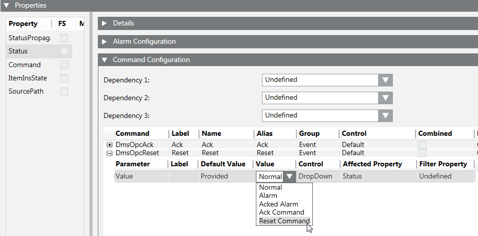
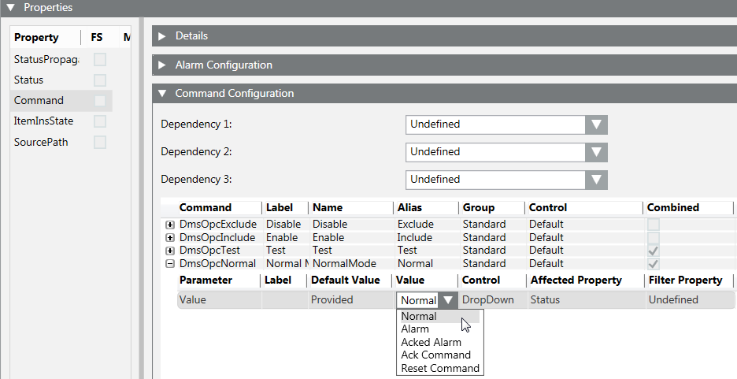
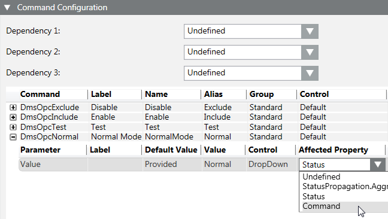
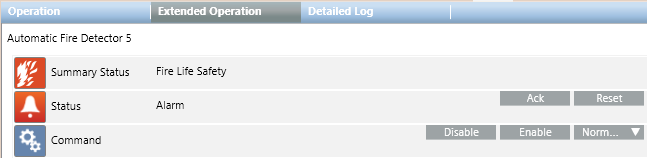

Configure OPC Fire Commands
Commands are managed in the Operation and Extended Operation tab of the Contextual pane of the OPC Network data points (see Figure Command Buttons in the Extended Operation Tab). The Ack and Reset commands are also available in Event List.
- In the customized OPC library, under Object Model, select an object (for example, Automatic Fire Detector).
- Click the Model & Functions tab.
- Open the Properties expander.
NOTE: The Ack and Reset commands are configured in the Status property, while other commands are configured in the Command property. See following instructions. - Click the Status property and open the Command Configuration expander to configure the Ack and Reset commands.
- For each command (DmsOpcAck and DmsOpcReset), from the drop-down list of the Value column, select the output value to send to the OPC server. For example, Ack Command (for DmsOpcAck) and Reset Command (for DmsOpcReset), which you typed in the associated text group.
NOTE: Click or to collapse or expand a single value row. - Click the Command property and open the Command Configuration expander to configure other available commands (if needed).
- For each command, from the drop-down list of the Value column, select the output value to send to the OPC server. For example, Normal (for Normal command), which you typed in the associated text group.
- To select commands from the Command text group, select Command from the drop-down list of the Affected Property column.
- Click Save
 .
. - Repeat the procedure for all objects.
NOTE: For detailed information about command configuration, press F1 for the online help.



